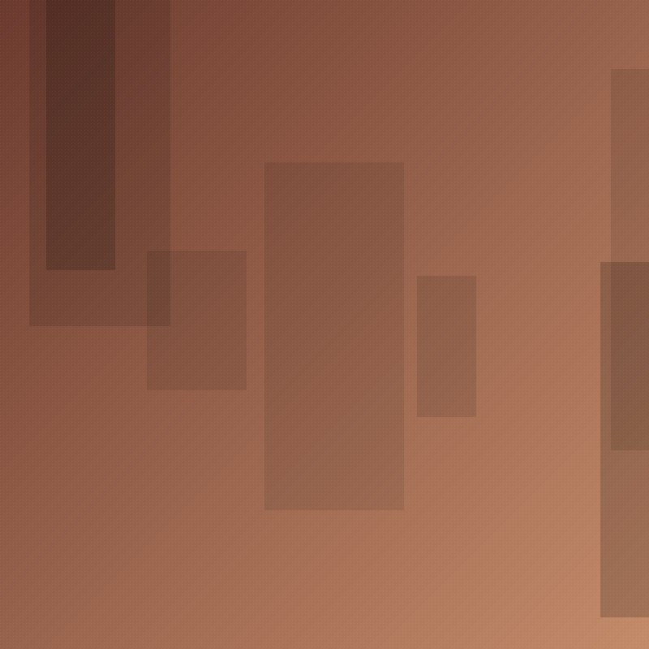
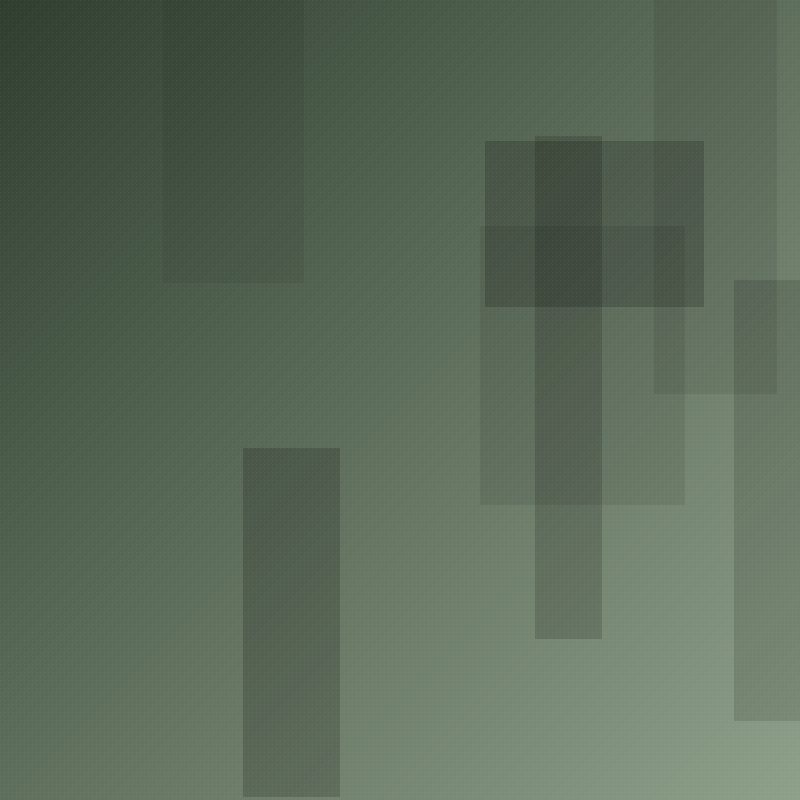
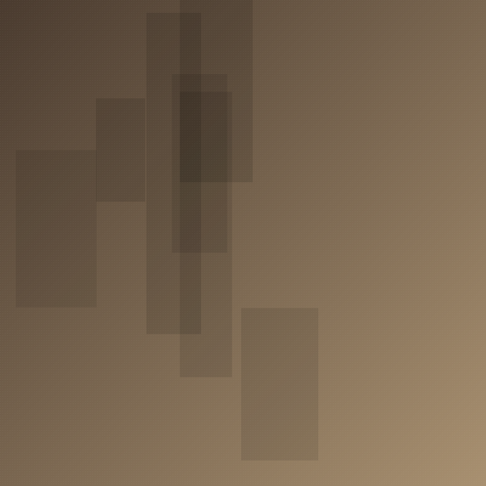

Signs of ownership
A street-by-street survey of storefront signage along Main Street, tracking language, typography, and hand-painted versus printed signs as a record of who owns and who is addressed.
View projectLonger pieces of work that group many entries around one question.

A street-by-street survey of storefront signage along Main Street, tracking language, typography, and hand-painted versus printed signs as a record of who owns and who is addressed.
View project
Murals in Mount Pleasant and Strathcona, paired with conversations with the artists and the people who live beside the work. Who commissioned it, who painted it, and who it speaks for.
View projectVancouver once had one of the densest concentrations of neon signage in North America. This project follows what remains, what was removed, and what replaced it.
View project
Granville Island as a stage for a certain idea of Vancouver. How the market's design, signage, and crowds present the city to itself and to visitors.
View project